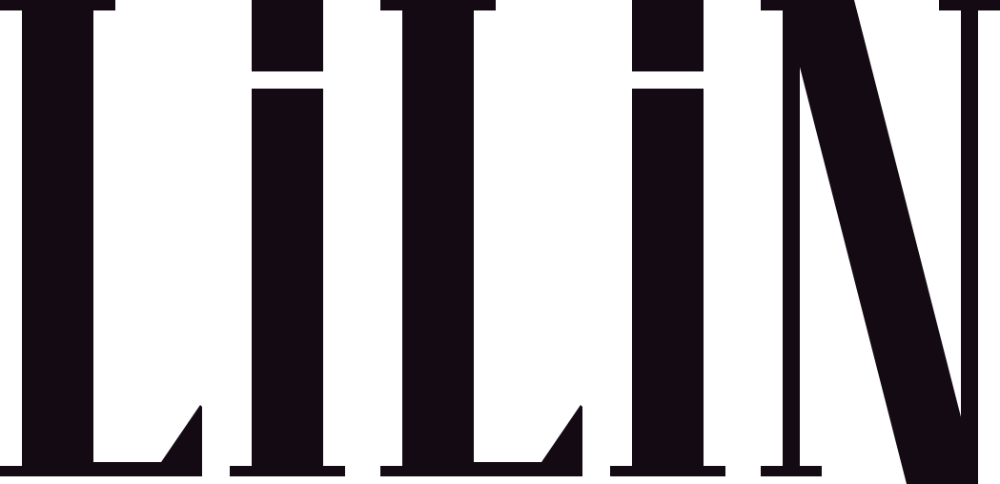
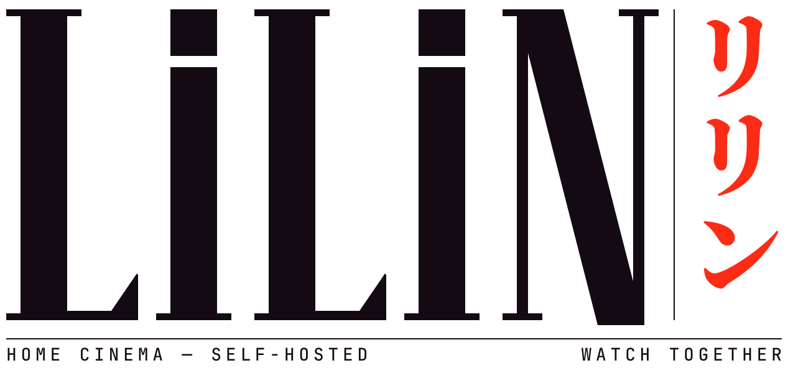

Identity · Concept 55 · リリン
In the myth the name comes from, the Lilin are simply people: the children who came after. The template says the rest. A huge lit screen stands in an empty flat at dusk, and one person stands under it, looking up.
So the identity is built on two things, the screen and the watcher. Lilin is a cinema you own, made for the few people you watch with. Every mark comes from that scene: a red panel of light, an upright figure, and their reflection in wet ground.
The type grammar comes from Japanese editorial design: heavy condensed letters, hairline rules, a vertical katakana column, and one hot colour against ink. It follows those rules without borrowing anyone's insignia.
Five drawn caps: thick stems, hairline serifs, and a tall, condensed stance. They follow Mincho stroke logic (heavy verticals, whisper-thin horizontals) applied to Latin letters, so the mark looks typeset in Tokyo and reads in Stockholm.

Each I is split by a narrow neck. At display size it is a standing figure with a square head, and the foot serif is the ground. Two of them stand in the name: watching together.
The L's arm is a hairline that ends in a triangular uroko, the "scale" a Mincho brush leaves at the end of a horizontal stroke.
The N's heavy diagonal runs slightly below the baseline: a weight that falls. It's the one unruly stroke in a disciplined word and gives the mark its slightly uneasy calm.
The full lockup sets the katakana reading リリン (the name itself, not decoration) in a vertical column in Mincho Black, red and exactly one cap height tall, behind a hairline. Below the rule is a quiet mono line of what Lilin is.


The icon is the banner reduced to its bones. A red slab recedes in perspective, and its bottom edge sits on the horizon. The wordmark's cut I stands before it as a silhouette. Below is a darker reflection, broken by two lines of water. The wedge outline stays recognisable at 32 px, and a simplified favicon drops the water lines.

Signal red is the screen and is used only for light. Everything else is ink, bone and dusk. Red never sits behind body text, and there are no gradients except real light.
Custom drawn letters. Only the name, never set as text.
Noto Serif Display: italic for promises, roman for description. リリン · 家の映画館 in Noto Serif CJK.
JetBrains Mono in wide-tracked caps for labels, numbers and the small print.
The template's scene, billboard, figure and every pole are kept. The new face is laid out flat at 3.6 : 1, then warped onto the painted panel with a true perspective transform. Because the far end of the panel is squeezed about 3×, the name sits on the near half. The template's own paint texture is multiplied back through it.
Around it, the sky is graded toward a dustier zenith. The panel now throws light: a soft halation on the concrete frame and a warm haze on the horizon. The puddles reflect the lettering itself as dark streaks in the red. A quiet colophon sits in the empty sky, and the grain is shared so the type belongs to the painting.


lilin-wordmark.svgWordmark, ink (also -bone, -red), outlined, no fonts neededlilin-lockup.svgWordmark + リリン + descriptor (also -bone, .png)lilin-icon.svgIcon, square (also -rounded, -small for favicons)lilin-icon-2048.pngHigh-resolution icon; plus 1024 rounded, 512, 180, 32lilin-banner.pngFinished banner, 3462 × 1818 (also 1731 px and og-1200x630.jpg)work/Generators: letterforms, icon, face art, warp and grading scripts